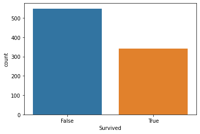
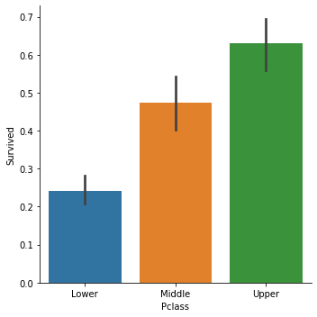
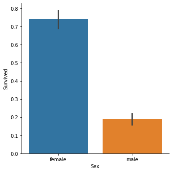
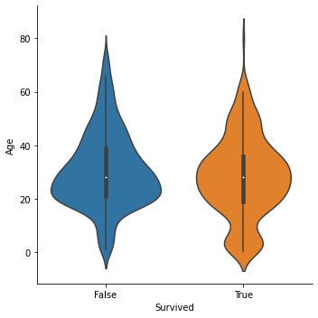
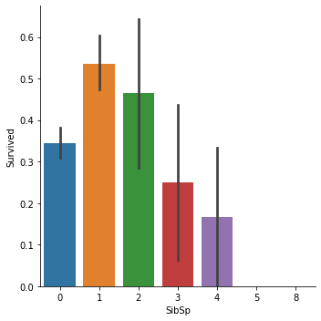
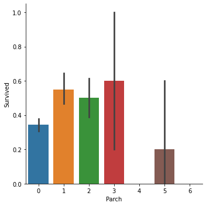
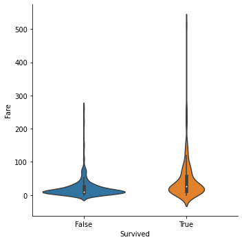
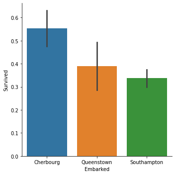

Initial Data Exploration¶
[1]:
import numpy as np
import pandas as pd
import matplotlib.pyplot as plt
import seaborn as sns
[2]:
pd.set_option('display.max_columns', None)
First, read in the data with the correct data types and concatenate the training and test data.
[3]:
titanic_dtypes = {
'Survived': bool,
'Pclass': 'category',
'Name': str,
'Sex': 'category',
'Ticket': str,
'Cabin': str,
'Embarked': 'category'
}
[4]:
train = pd.read_csv('../data/raw/train.csv', index_col='PassengerId', dtype=titanic_dtypes)
test = pd.read_csv('../data/raw/test.csv', index_col='PassengerId', dtype=titanic_dtypes)
[5]:
df = pd.concat([train, test], axis=0, keys=['train', 'test'])
[6]:
df.dtypes
[6]:
Survived object
Pclass category
Name object
Sex category
Age float64
SibSp int64
Parch int64
Ticket object
Fare float64
Cabin object
Embarked category
dtype: object
Pclass and Embarked are currently encoded as single characters. To make plots more helpful, we’ll replace these codes with informative levels.
[7]:
df['Pclass'] = (
df['Pclass']
.cat.rename_categories({'1': 'Upper', '2': 'Middle', '3': 'Lower'})
.cat.as_ordered()
.cat.reorder_categories(['Lower', 'Middle', 'Upper'])
)
[8]:
df['Embarked'] = (
df['Embarked']
.cat.rename_categories({'C': 'Cherbourg', 'Q': 'Queenstown', 'S': 'Southampton'})
)
Data at a glance¶
[9]:
df.head()
[9]:
| Survived | Pclass | Name | Sex | Age | SibSp | Parch | Ticket | Fare | Cabin | Embarked | ||
|---|---|---|---|---|---|---|---|---|---|---|---|---|
| PassengerId | ||||||||||||
| train | 1 | False | Lower | Braund, Mr. Owen Harris | male | 22.0 | 1 | 0 | A/5 21171 | 7.2500 | NaN | Southampton |
| 2 | True | Upper | Cumings, Mrs. John Bradley (Florence Briggs Th... | female | 38.0 | 1 | 0 | PC 17599 | 71.2833 | C85 | Cherbourg | |
| 3 | True | Lower | Heikkinen, Miss. Laina | female | 26.0 | 0 | 0 | STON/O2. 3101282 | 7.9250 | NaN | Southampton | |
| 4 | True | Upper | Futrelle, Mrs. Jacques Heath (Lily May Peel) | female | 35.0 | 1 | 0 | 113803 | 53.1000 | C123 | Southampton | |
| 5 | False | Lower | Allen, Mr. William Henry | male | 35.0 | 0 | 0 | 373450 | 8.0500 | NaN | Southampton |
[10]:
for source, group in df.groupby(level=0):
print(f'{source}:')
print('======')
print(group.info())
print('\n')
test:
======
<class 'pandas.core.frame.DataFrame'>
MultiIndex: 418 entries, ('test', 892) to ('test', 1309)
Data columns (total 11 columns):
# Column Non-Null Count Dtype
--- ------ -------------- -----
0 Survived 0 non-null object
1 Pclass 418 non-null category
2 Name 418 non-null object
3 Sex 418 non-null category
4 Age 332 non-null float64
5 SibSp 418 non-null int64
6 Parch 418 non-null int64
7 Ticket 418 non-null object
8 Fare 417 non-null float64
9 Cabin 91 non-null object
10 Embarked 418 non-null category
dtypes: category(3), float64(2), int64(2), object(4)
memory usage: 39.2+ KB
None
train:
======
<class 'pandas.core.frame.DataFrame'>
MultiIndex: 891 entries, ('train', 1) to ('train', 891)
Data columns (total 11 columns):
# Column Non-Null Count Dtype
--- ------ -------------- -----
0 Survived 891 non-null object
1 Pclass 891 non-null category
2 Name 891 non-null object
3 Sex 891 non-null category
4 Age 714 non-null float64
5 SibSp 891 non-null int64
6 Parch 891 non-null int64
7 Ticket 891 non-null object
8 Fare 891 non-null float64
9 Cabin 204 non-null object
10 Embarked 889 non-null category
dtypes: category(3), float64(2), int64(2), object(4)
memory usage: 71.5+ KB
None
[11]:
df.groupby(level=0).apply(lambda x: x.describe())
[11]:
| Age | SibSp | Parch | Fare | ||
|---|---|---|---|---|---|
| test | count | 332.000000 | 418.000000 | 418.000000 | 417.000000 |
| mean | 30.272590 | 0.447368 | 0.392344 | 35.627188 | |
| std | 14.181209 | 0.896760 | 0.981429 | 55.907576 | |
| min | 0.170000 | 0.000000 | 0.000000 | 0.000000 | |
| 25% | 21.000000 | 0.000000 | 0.000000 | 7.895800 | |
| 50% | 27.000000 | 0.000000 | 0.000000 | 14.454200 | |
| 75% | 39.000000 | 1.000000 | 0.000000 | 31.500000 | |
| max | 76.000000 | 8.000000 | 9.000000 | 512.329200 | |
| train | count | 714.000000 | 891.000000 | 891.000000 | 891.000000 |
| mean | 29.699118 | 0.523008 | 0.381594 | 32.204208 | |
| std | 14.526497 | 1.102743 | 0.806057 | 49.693429 | |
| min | 0.420000 | 0.000000 | 0.000000 | 0.000000 | |
| 25% | 20.125000 | 0.000000 | 0.000000 | 7.910400 | |
| 50% | 28.000000 | 0.000000 | 0.000000 | 14.454200 | |
| 75% | 38.000000 | 1.000000 | 0.000000 | 31.000000 | |
| max | 80.000000 | 8.000000 | 6.000000 | 512.329200 |
[12]:
train = df.loc['train']
test = df.loc['test']
Target variable: Survived¶
[13]:
train['Survived'].value_counts()
[13]:
False 549
True 342
Name: Survived, dtype: int64
[14]:
sns.countplot(x='Survived', data=df)
[14]:
<matplotlib.axes._subplots.AxesSubplot at 0x7faa1a379a00>

Pclass - Ticket Class¶
[15]:
train['Pclass'].value_counts().sort_index()
[15]:
Lower 491
Middle 184
Upper 216
Name: Pclass, dtype: int64
[16]:
sns.catplot(x='Pclass', y='Survived', kind='bar', data=train)
[16]:
<seaborn.axisgrid.FacetGrid at 0x7faa1a43b160>

Sex¶
[17]:
train['Sex'].value_counts()
[17]:
male 577
female 314
Name: Sex, dtype: int64
[18]:
sns.catplot(x='Sex', y='Survived', kind='bar', data=train)
[18]:
<seaborn.axisgrid.FacetGrid at 0x7faa17bb3130>

Age¶
[19]:
sns.catplot(x='Survived', y='Age', kind='violin', bw=0.25, data=train)
[19]:
<seaborn.axisgrid.FacetGrid at 0x7faa17c12040>

SibSp - Number of siblings and spouses aboard¶
[20]:
train['SibSp'].value_counts().sort_index()
[20]:
0 608
1 209
2 28
3 16
4 18
5 5
8 7
Name: SibSp, dtype: int64
[21]:
sns.catplot(x='SibSp', y='Survived', kind='bar', data=train)
[21]:
<seaborn.axisgrid.FacetGrid at 0x7faa17c21610>

Parch - Number of parents and children aboard¶
[22]:
train['Parch'].value_counts().sort_index()
[22]:
0 678
1 118
2 80
3 5
4 4
5 5
6 1
Name: Parch, dtype: int64
[23]:
sns.catplot(x='Parch', y='Survived', kind='bar', data=train)
[23]:
<seaborn.axisgrid.FacetGrid at 0x7faa5c3b5490>

Fare¶
[24]:
train['Fare'].describe()
[24]:
count 891.000000
mean 32.204208
std 49.693429
min 0.000000
25% 7.910400
50% 14.454200
75% 31.000000
max 512.329200
Name: Fare, dtype: float64
[25]:
sns.catplot(x='Survived', y='Fare', kind='violin', bw=0.25, data=train)
[25]:
<seaborn.axisgrid.FacetGrid at 0x7faa17a0cfd0>

Embarked - Port of Embarkation¶
[26]:
train['Embarked'].value_counts()
[26]:
Southampton 644
Cherbourg 168
Queenstown 77
Name: Embarked, dtype: int64
[27]:
sns.catplot(x='Embarked', y='Survived', kind='bar', data=train)
[27]:
<seaborn.axisgrid.FacetGrid at 0x7faa17974880>
